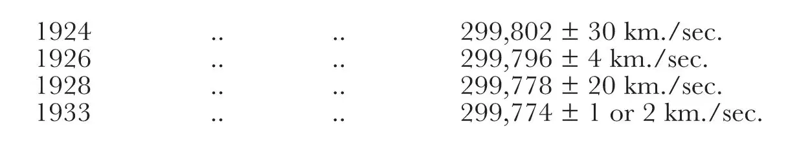

中文
中文M. E. J. Gheury de Bray
Editor’s Note
There were many occasions in the early decades of the publication when Nature deliberately published items that were calculated to surprise and even challenge orthodox opinion. Thus the journal published in the 1930s three letters from a man called M. E. J. Gheury de Bray advocating the opinion that the velocity of light is not constant in time but that it had slowly decreased between 1924 and 1933. The possibility of a slow change in supposed “constants” of physics is now back in vogue among cosmologists, albeit so far without compelling evidence to support it. 中文
IN 1927 there was published in these columns1 a table of all the determinations of the velocity of light which I compiled from the original memoirs, together with a discussion, and I pointed out that except a pair of practically simultaneous values obtained in 1882 the final values (printed in heavy type) indicate a secular decrease of velocity. The last (and lowest) value given is 299,796 ± 4 km./sec. for 1926. 中文
Since then, two determinations have been made: the first by Karolus and Mittelstaedt (1928) using a Kerr cell, to the terminals of which an alternating potential was applied, for interrupting periodically the luminous beam, instead of a toothed wheel2. A frequency can be obtained in this way, of the order of a million per second, which can be accurately calculated, thus permitting a very short base to be used (41.386 metre) without any loss of accuracy. The value found (mean of 755 measurements) was 299,778 ± 20 km./sec. The second recent determination is mentioned in Nature of February 3, p.169: it gives for the velocity of light in 1933 the value 299,774 ± 1 or 2 km./sec. 中文
The determinations of this so-called constant made during the last ten years (the most accurate of the whole series) are therefore:

No physicist, looking at the above table, can but admit that the alleged constancy of the velocity of light is absolutely unsupported by observations. As a matter of fact, the above data, treated by Cauchy’s method3, give the linear law:
Vkm./sec. = 299,900 – 4T(1900) years. 中文
When I first pointed out this fact (in 1924) it was objected that the data available were inconclusive, because the probable errors of the observations were greater than the alleged rate of change. Sir Arthur Eddington has dealt the death blow to the theory of errors4 and “this theory is the last surviving stronghold of those who would reject plain fact and common sense in favour of remote deductions from unverifiable guesses, having no merit other than mathematical tractability”5. Even “die-hards”, however, may fruitfully meditate over the 2nd and the 4th values in the above table. 中文
(133, 464; 1934)
M. E. J. Gheury de Bray: 40 Westmount Road, Eltham, S.E.9.
References:
1. Nature, 120, 603, Oct. 22, 1927.
2. Phys. Z., 698-702; 165-167; 1929.
3. Engineer, Sept. 13, 1912.
4. Proc. Phys. Soc., 271-282; 1933.
5. Dr. N. R. Campbell, loc. cit., 283.